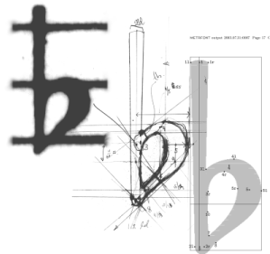

Introduction
Notre objectif
L’inspiration pour LilyPond provient de deux musiciens qui s’étaient lassés de l’aspect fade et ennuyeux des partitions musicales produites avec un ordinateur. Tous les musiciens préfèrent lire de belles partitions de musique, pourquoi donc les programmeurs ne développeraient-ils pas un logiciel capable d’en produire ?
C’est justement ce que fait LilyPond : ce logiciel grave de la musique selon le meilleur de la tradition typographique. Dans la mesure où il s’occupe de tous les détails de mise en forme, compositeurs, transcripteurs et imprimeurs peuvent se concentrer sur la musique plutôt qu’à améliorer ce que produit par défaut leur logiciel. Les interprètes obtiendront quant à eux des parties grâce auxquelles ils pourront se concentrer sur leur jeu plutôt que sur du déchiffrage.
Ce que LilyPond sait faire
- Fonctionnalités : de quoi LilyPond est capable.
- Exemples : je veux voir des partitions !
- Liberté : LilyPond est un logiciel libre.
- Contexte : notre esthétique de la gravure informatisée.
Ceux qui utilisent LilyPond
- Productions : cas d’utilisation de LilyPond.
- Témoignages : que disent les gens sur LilyPond ?
LilyPond en action
- Entrée sous forme de texte : vous écrivez de la musique comme du texte ?
- Facilités d’édition : autres façons de travailler avec LilyPond.
| Fonctionnalités | Ce dont LilyPond est capable. | |
| Exemples | Quelques exemples concrets. | |
| Liberté | De la liberté et de la GPL. | |
| Contexte | L’esthétique assistée par ordinateur. | |
| Productions | Cas concrets d’utilisation de LilyPond. | |
| Témoignages | Ce que se dit de LilyPond. | |
| Entrée sous forme de texte | C’est du texte, pas de la musique ! | |
| Facilités d’édition | Différentes méthodes de travail avec LilyPond. |
Autres langues : English, català, česky, deutsch, español, magyar, italiano, 日本語, nederlands, 中文.
About automatic language selection.